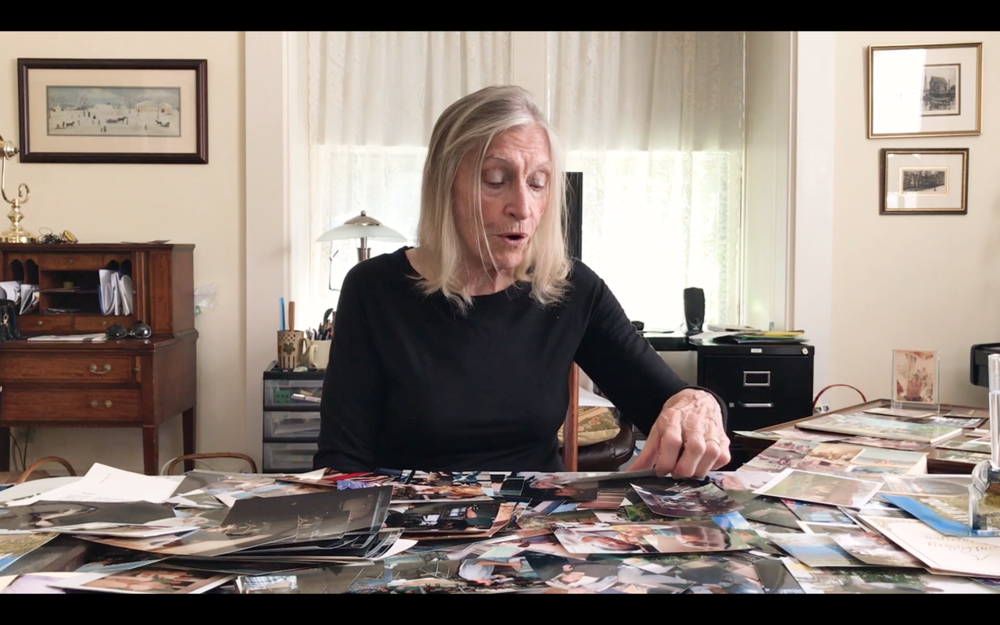
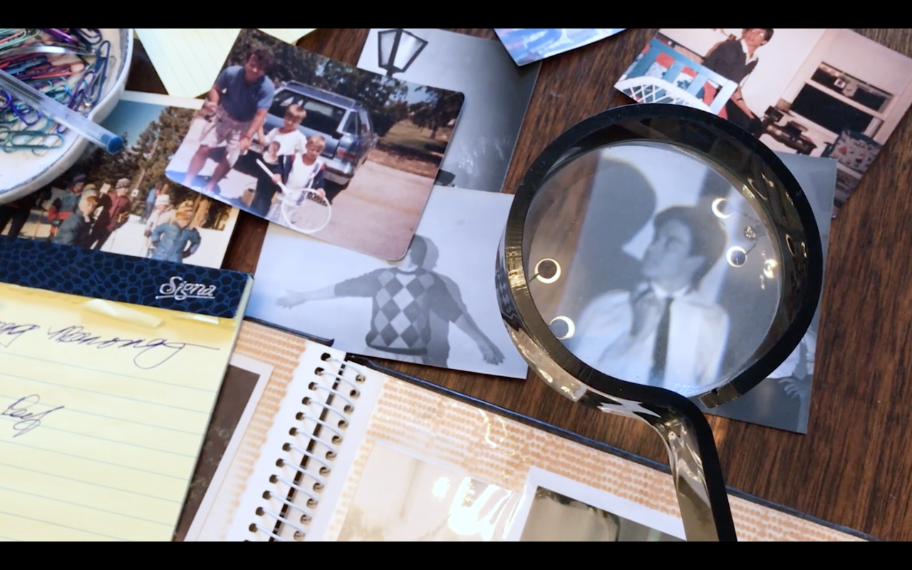

my passion for branding emerged when i was once adjacent to many cool kids in bands. directing music videos and developing album release concepts gave me a taste of what it meant to transform a vision into a product.


"Michael", 2018 [direction, cinematography, editing]
a private documentary examining the life of NCIS and Bull actor Michael Weatherly
Sober Octaves [art direction]
Are We Golden? [production, screenplay]
COACH [sound]